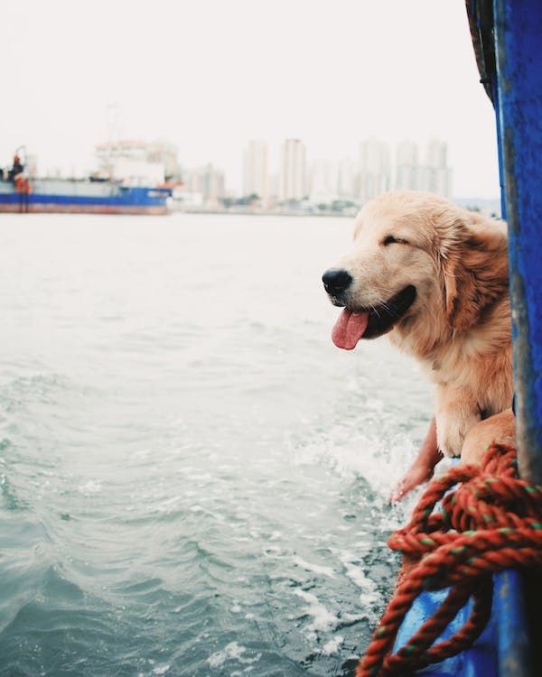

Golden Retrievers are
awesome
outgoing, playful, and gentle
outgoing, playful, and gentle
Golden Retriever
in a boat
 Golden Retriever jumping
Golden Retriever jumping
into the water
Golden Retriever playing
with a tennis ball
Golden Retriever in
the snow
-Linda Blair
Sign Up today and receive daily information about Golden Retrievers